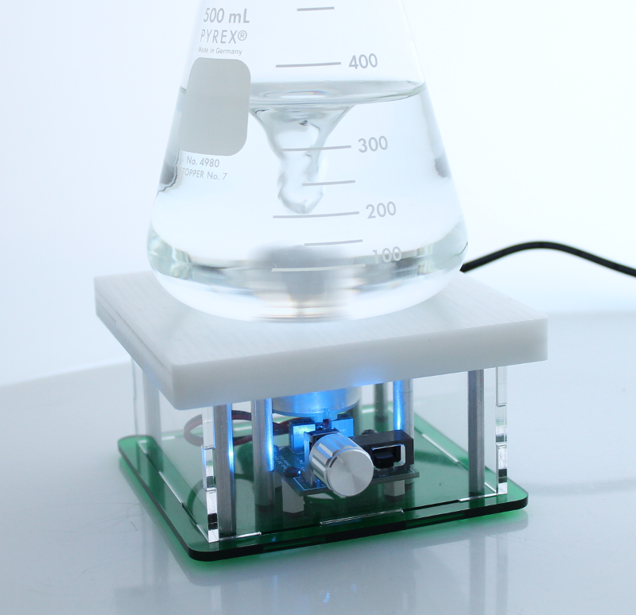

Open Source DIY Kit¶
This is the documentation site for the Desktop Stir Plate Kit. This kit is used to build a stir plate suitable for many lab applications such as buffer, reagent and media preparation. The kit is very easy to assemble - no soldering is required and tools are included with the kit. See Assembly Instructions beginning with Step 1: Assembly of motor and magnet hub The kit also includes a stir bar and 250 mL beaker so you can start using the stir plate right away. A full list of kit contents can be found on the Kit Contents - checklist page

Stir Plate Features¶
- 4.5” x 4.5” surface area for beakers, flasks, cylinders and other glassware. The stir plate surface is a smooth, white material (delrin/acetal).
- For use with glassware with a base diameter of up to 11mm max (typically up to and including 1L size flasks).
- Stir plate height on the benchtop is 2.5”. Multiple color options are available for the base.
- The stir plate is designed so that the magnet hub sits close to the stir bar (approx. 1/8” distance between magnets and bottom of flask).
- Stir-plate has a variable speed control to allow for a range of speed from very slow to very rapid mixing.
- A blue LED indicator displays whether the stir-plate is on.
License¶
This is an open source hardware project licensed under the Creative Commons Attribution 3.0 License.
Design files¶
- KiCad PCB design and Gerber files - https://bitbucket.org/iorodeo/basic_speed_control_3v3.
- Mechanical designs - https://bitbucket.org/iorodeo/stir_plate_mechanics.